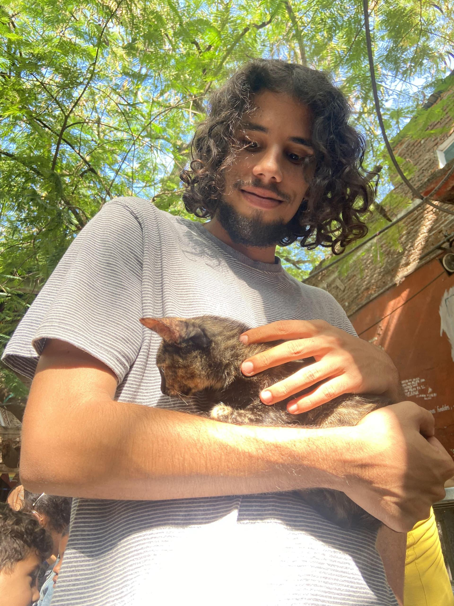

Sinopsis: Este reportaje transmedia explora el proceso complejo de bienestar animal en la ciudad de Santa Clara, desde el rescate y cuidado de los animales en refugios hasta la adopción responsable. A través de testimonios, infografías y audiovisuales descubrirás cómo operan los voluntarios y las leyes de protección animal en el país, incluyendo los avances y desafíos del marco legal cubano.
El proyecto no solo informa, sino que actúa: te guiará por diferentes opciones de adopción. Tú eliges la que te resulte más conveniente y atractiva. Además, encontrarás un quiz interactivo con el que podrás ponerte a prueba y saber cuán apto estás para adoptar una mascota.
De esta forma sus realizadores buscan movilizar a la comunidad, fomentar la adopción y protección de los animales, así como visibilizar el trabajo de quienes ya lo hacen. ¡Súmate al cambio y descubre cómo tú también puedes dejar una huella positiva!
Una Historia Real
La China, así le dicen todos en la cuadra y no porque tenga los ojos rasgados, sino porque a los perros sin pelo se les llama así: chinos. Solía rondar a dos cuadras de la casa. Nunca imaginé que la maltrataban.
La vi llorar una tarde. Lloraba como lloran los perros, sin lágrimas, pero con un sonido que atraviesa. Le llevé agua, un poco de arroz y picadillo; comió sin levantar la cabeza. Después recogí los cacharros y la acompañé a su casa poco antes de entrar al callejón del mexicano. Todos sabían dónde vivía la China. Toqué la puerta. El hombre que salió ni preguntó, solo la vio y le dio una patada que la tiró hasta la otra esquina de la sala.
En el callejón del mexicano se organizan peleas de perros, poco después lo supe: ella había sido perra de peleas, pero ya no servía para eso, mucho menos para dar crías.
Esa misma tarde la encontré de nuevo, la recogí y me la llevé a casa. Mi papá no preguntó demasiado. La bañamos, le dimos de comer y se durmió con la cabeza pegada a la toalla. Mi papá fue a hablar con el dueño. Le dijo que no íbamos a devolverla por abusador. El tipo casi se le trepa encima. Al final dijo que no importaba que en dos días se iba a Estados Unidos. Mentira. Fue preso por robar balitas de gas en la avenida 7 de diciembre.
— Leidy Mariam
Ahora que conoces la historia de China, ¿te animas a adoptar y proteger a un amigo animal?
¡Has tomado una buena decisión!
Se estima que en el mundo hay más de 600 millones de animales de compañía sin hogar. Adoptar una mascota significa darles una oportunidad de una vida feliz y segura. Te dejamos varias opciones para realizar el proceso de adopción.
Acude al BAC
O llégate al refugio de Caridad, allí encontrarás a...
Cualquiera que haya sido la razón que te hizo pulsar esta respuesta es completamente válida. Según el último estudio de Fundación Affinity, los factores económicos y las camadas no deseadas constituyen las principales causas de abandono animal y rechazo de adopción.
Esta es tu oportunidad para informarte en profundidad sobre el bienestar y la protección animal a través del siguiente reportaje.
Primeros pasos del bienestar animal en Cuba
Durante la intervención militar de Estados Unidos en Cuba, el 28 de mayo de 1900 exactamente, se publicó en el periódico oficial del gobierno, en ingles con traducción al español, una orden firmada por el asistente general adjunto J.B. Hickey. Dicha orden reglamentaba los castigos que recibirían aquellos que cometieran ciertos actos de maltrato o sobre la transportación de animales y acerca de aquellos que abandonaran a sus desvalidas mascotas en la calle.
Desde 1972 Cuba es país miembro de la Organización Mundial de Sanidad Animal (OMSA).
El 4 de marzo de 1987 se fundó ANIPLANT, que elaboró proyectos relacionados con la protección legal de los animales.
Hubo personas que se preocuparon y ocuparon de la protección de los animales, entre ellas María de las Mercedes Muñoz Sañudo (izquierda), madre de Dulce María Loynaz, y Jeannette Ford Ryder (derecha), filántropa norteamericana y fundadora de la Sociedad Cubana para la Protección de Niños, Animales y Plantas en 1906.
En Cuba hoy la voluntad lleva la delantera
Conoce lo que piensan los ciudadanos de Santa Clara sobre las manifestaciones de maltrato animal.
Una ley joven que deberá crecer
El 26 de febrero de 2021 quedó aprobado el Decreto Ley No. 31 de Bienestar Animal como instrumento legal que regula los principios, deberes, reglas y fines respecto al cuidado, la salud y la utilización de los animales para garantizar su bienestar. En su artículo 2.2 destaca que se entiende por bienestar animal el adecuado estado físico y mental de un animal en relación con las condiciones en las que vive y muere
Dentro de las medidas a aplicar comprende multas desde 500 hasta 4000 pesos y el decomiso del animal y suspensión temporal o definitiva de licencias cuando corresponda. Asimismo, contiene disposiciones sobre la asistencia veterinaria, control de poblaciones callejeras, animales en la experimentación y los utilizados en deportes, entretenimiento y exhibición.
Según Yumara Molina Pérez, especialista del Departamento de Sanidad Animal en Santa Clara, en el año 2024 en la ciudad hubo cinco casos de quejas por maltrato animal, de los cuales dos tuvieron Decreto Ley y medidas recuperativas aplicadas. Los tres restantes no procedieron pues no se detectaron en el lugar las violaciones referidas en las quejas.
Sin embargo, el estado de opinión respecto al maltrato animal, que afirma su existencia en Cuba de manera no aislada, no es proporcional a las quejas presentadas en una ciudad con más de 200 mil habitantes. El desconocimiento sobre la ley y esceptisimo sobre su cumplimiento parecieran las causas de las prácticamente nulas denuncias
El M. Sc. Freddy Peña Rodróguez, profesor de Lic. en Medicina Veterinaria y Zootecnia en la Universidad Central “Marta Abreu” de Las Villas, considera que, efectivamente, la población no conoce sobre esta ley pues en su consulta recibe varias personas en busca de atención médica para animales que han sido maltratados que afirman no saber anteriormente nada sobre eso. Otros responden que no vale la pena denunciar.
Como médica veterinaria que también suele recibir animales con lesiones por abusos, Zabdí Beritán Hernández cree que la Ley es insuficiente en cuanto a las medidas aplicadas a los maltratadores. Señala que quienes cometen golpizas y abandono deben tener castigos mayores a los estipulados hasta el momento, pues son acciones deliberadas que generalmente se realizan hacia animales afectivos.
Zabdí resalta orgullosa la labor que relizan las personas que voluntariamente rescatan, curan, cuidan y gestionan adopción para los animales víctimas de maltrato. Como parte de este grupo de personas, pues colabora en la atención médica de animales en refugios de voluntarios, expresa que el perfeccionamiento de la Ley por el que se aboga debe ir de la mano con trabajo de conscienciación en los ciudadanos.
BAC: La organización que lidera los esfuerzos en Cuba
En Cuba no existen refugios de animales a cargo del Estado. El trabajo de rescate y proteccion de los animales sin hogar o maltratados recae en las organizaciones sin fines de lucro y su red de voluntarios. Bienestar Animal Cuba (BAC) desde 2020 es la organización que lidera estos esfuerzos en el país con presencia en casi todas las provincias.
Las filiales a lo largo y ancho del pais trabajan con hogares temporales a cargo de miembros de la organización o personas externas que brindan su casa para, con el asesoramiento de los miembros, cuidar a los animales mientras llega la adopción.
Adriana Hernández Arregoitia, representante del BAC en Santa Clara, explica que la organzación realiza en cada territorio ferias de adopciones, campañas de esterilización y vacunación antirrábica y campañas de concientización en los espacios donde tienen lugar las activiades anteriores o a través de sus redes sociales. Todas estas iniciativas dependen en gran medida de la efectividad de las campañas de recaudaciones de fondos y donaciones, por lo que la periodicidad y masividad no son las deseadas.
Carey (hembra) fue adoptada y desparasitada en la feria de adopciones de BAC Santa Clara en noviembre de 2023. Estuvo tres meses bajo el cuidado de los voluntarios de la organización luego de que uno de ellos la encontrara golpeada en la calle.
Si bien nuestro fin es concretar la adopción para los animales bajo nuestro cuidado, afirma, velamos por que la persona interesada en adoptar cumpla con los requisitos para, en efecto, brindar una adopción responsable. En nuestra planilla de adopción están recogidos los deberes y derechos que cada adoptante tiene para con el animal.
Plantilla de adopción de Carey
Puesto que ya Cuba cuenta con su Ley de Bienestar Animal, ahora la labor de BAC en ese sentido se centra en velar por su estricto cumplimiento. La organización facilita información sobre las vías para realizar denuncias, así como acompañamiento durante el proceso en caso de ser solicitado y contribuye a visibilizar casos de maltrato, señala Adriana.
Los perritos de Cari
Maya tuvo que pasar por varios tratamientos cuando llegó al refugio: un borracho de Ranchuelos la había violado. El Código Penal cubano no tipifica la zoofilia, lo que significa que no se pueden tomar acciones legales contra las personas que comenten estos actos. La Ley de Bienestar Animal No.31/2021 sí reconoce la zoofilia dentro del maltrato animal, pero no como abuso sexual.
Luna pertenecía a los vecinos de arriba de casa de Caridad. La dejaron en el refugio una vez les llegó la salida para el extranjero. La crisis migratoria en el país ha dejado a miles de mascotas en situación de calle, este no ha sido el caso de Luna, pero es el de muchos. Actualmente no constan estadísticas oficiales que registren el impacto del éxodo en la vida de los animales; no obstante, las calles hablan por sí solas.
«Ella no se quiere ir de aquí -dijo Caridad-, esta es su casa».
Mía vive con el miedo de que venga alguien a adoptarla como ya pasó una vez y por eso ante la llegada de extraños se esconde en la oscuridad que le proporciona el portón del refugio. Caridad la dio en adopción hace mucho tiempo atrás, pero se escapó de la casa y estuvo vagando perdida por tres días en la ciudad. Los perros pueden padecer varios trastornos psicológicos, algunos son fobias, ansiedad por separación y depresión. Caridad no puede afirmar con certeza de qué padece Mía: los veterinarios que acuden al refugio solo velan del bienestar físico de los animales, nunca del psicológico.
El hermano de Caridad quiso sacrificar a Elí porque le mataba las gallinas. Caridad no lo permitió. Parece que como gesto de nobleza Elí se mantiene cerca de Caridad en todo momento y le ladra a quien se le acerca intentando protegerla como un guardaespaldas. La lealtad de los perros es innegable y su amor, aún más.
El neurocientífico Paul Zak midió la respuesta de perros y gatos a la interacción con sus dueños y comprobó que los niveles de oxitocina se habían elevado en un 52,7%, mientras que en los gatos este aumento fue solo del 12%. A partir de estos datos Zak concluyó que los perros aman cinco veces más que los gatos, si se miden en oxiticina.
Dice Cari que Melé es la perrita más consentida de la casa: «si no le pones pollo de comida no come más na». Le gusta acostarse en el tapete del baño de casa de Caridad y es la más popular de las perritas. Su pelaje y ojos vivos han llamado la atención de todo el que llega al refugio.
Melé es una de esas perritas que fue abandonada al nacer en las cercanías del refugio. Los gatos que tenía por aquel entonces Caridad (mucho antes de la pandemia) comenzaron a maullar y la hicieron percatarse de que muy cerca se encontraba una pequeña bolita de pelos pidiendo por comida.
Niján es otra de las perritas abandonadas en el refugio desde chiquita. Llegó a los brazos de Caridad con una enfermedad facial y no puede abrir la mandíbula correctamente, tampoco cerrarla del todo, así que anda por el patio con mal hocico, como buscando pelea. En realidad es increíblemente cariñosa y busca que los extraños le masajeen el pelaje.
La enfermedad ha provocado que no pueda defenderse de los otros perros, con los que aparentemente sí le gusta irse a mordidas.
«Los precios en el mercado informal -cuenta Caridad- son más inalcanzables que nunca». Solo las pastillas alcanzan los 2 mil pesos. La comida, por otro lado, es un dilema. En el refugio los animales los alimenta con harina, sopa y arroz a precios que llegan a igualar el monto de una sola pastilla.
Hace unos meses tuvieron que ligar a Reiján. Pasaron los días y la zona de la herida parecía completamente sana; sin embargo, la perrita ladraba con fuerzas si le presionaban los hilos todavía cosidos en la piel. Caridad la había encontrado por el monte y sospecha que la tenían para dar crías. «El hilo con el que la ligaron parece que no era el indicado, sino el que en ese momento tenía el veterinario y su cuerpo lo rechazó».
No obstante, es importante conocer sobre los beneficios de la esterilización de las mascotas, pues reduce el abandono de camadas no deseadas, comportamientos no deseados como el marcaje y la agresividad en época de celo y previene enfermedades graves como infecciones uterinas o ciertos tipos de cáncer.